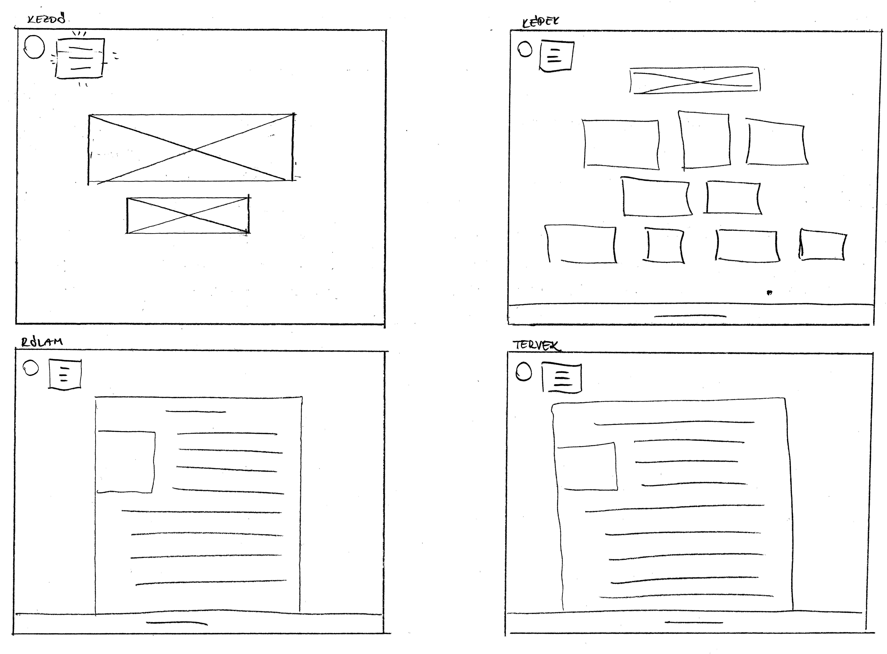

Tervek, kiindulás
 A feladat megoldása viszonylag nehézkesen indult, még azt sem tudtam, mit jelent a portfólió kifejezés. Aztán amint belejöttem, és már több minden ment magától, rájöttem, hogy egész jó buli csinálni egy ilyen kis honlapot. Ráadásul csak azután kezdtem el készíteni, miután már megnéztem az összes ajánlott videót és minta portfólió oldalakat, így a fejemben kialakult kép alapból olyan volt, amiről úgy gondoltam, hogy meg is tudom csinálni, és nem szálltam el valami látványos, ám bonyolult tervvel.
Amin változtattam, vagy nem sikerült:
A Rólam oldalon lévő kép, ami a szövegben van benne valamiért nem akarta megváltoztatni a méretét, csak úgy, hogy négyzet formájúra vágtam körbe. Gondolom valami apróságot hagytam ki, de tulajdonképpen így jobban is tetszik, szóval hagytam így.
A Képek oldalt úgy képzeltem el, hogy a képek (tök mindegy, hogy a szélesség miatt egy vagy több darab van egy sorban) középre legyenek sorolva, ehelyett baloldalról indul az összes.
A tündérre rákattintva megjelenő kis csoda szöveget csak úgy tudtam pozicionálni, hogy a képernyő bal oldaláról adtam meg a távolságát. Fogalmam sincs miért így jött ki.